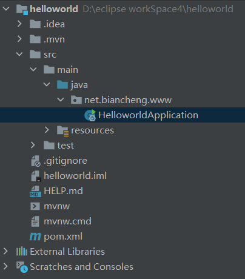
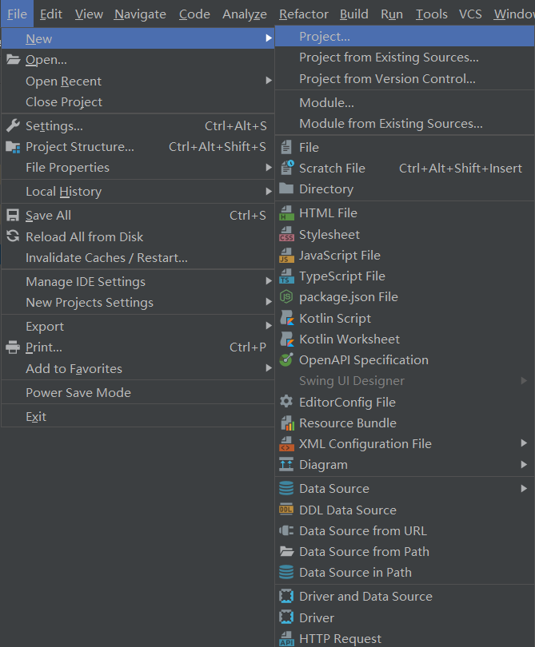
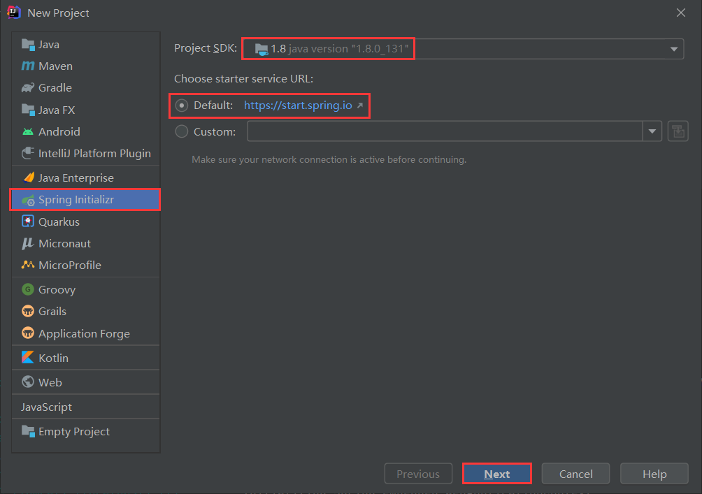
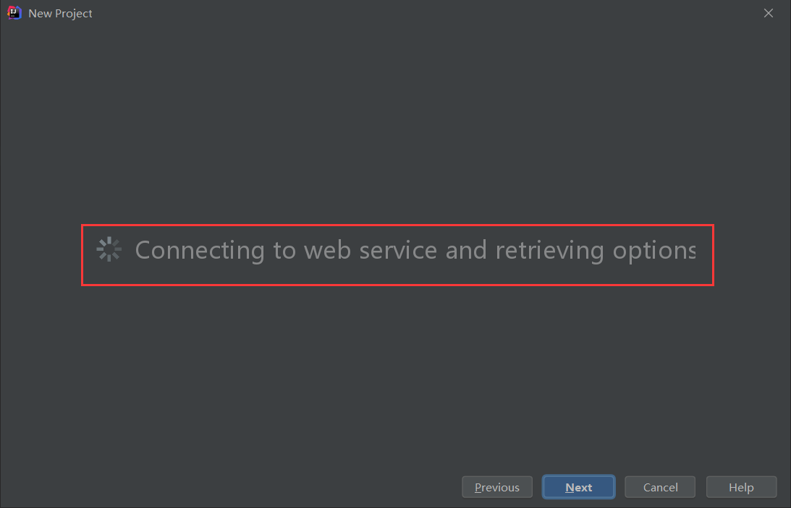
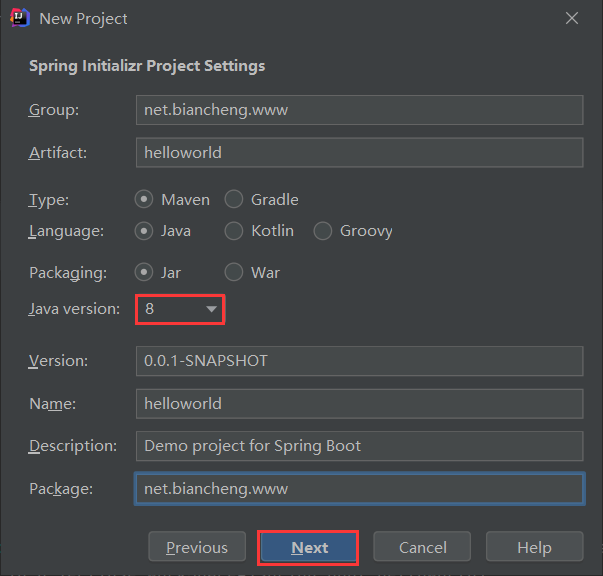
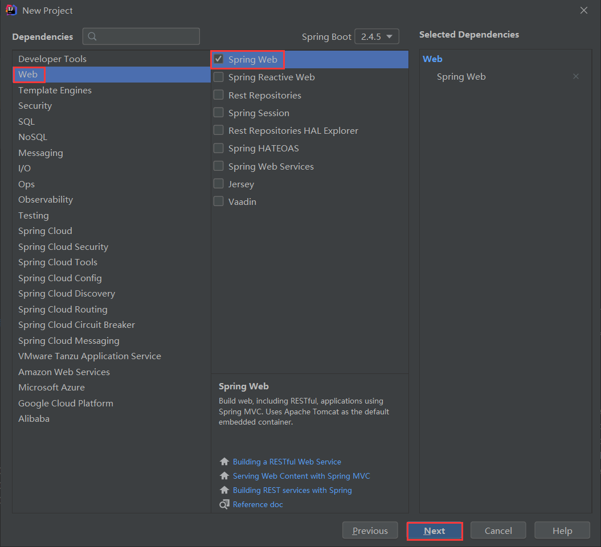
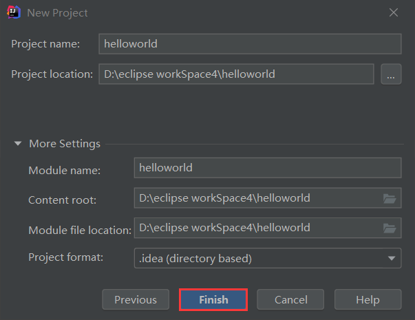
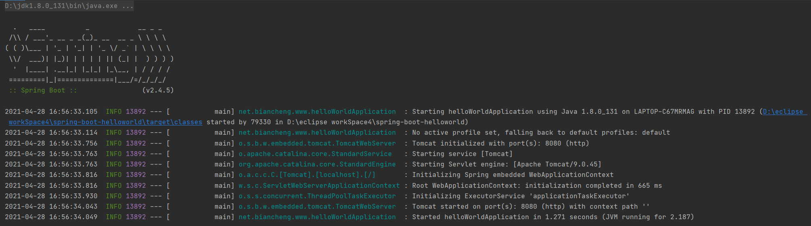
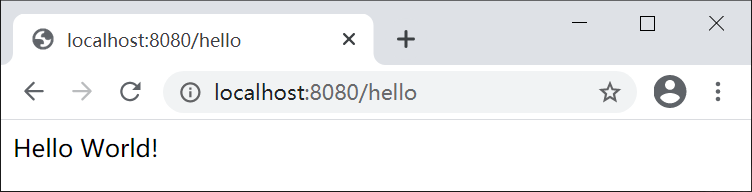

IDEA创建Spring Boot项目
本节，我们将为您详细讲解如何使用 IDEA 创建一个 Spring Boot 项目。
配置开发环境
在使用 Spring Boot 进行开发之前，第一件事就是配置好开发环境。这里我们以 Windows 操作系统为例，如果您使用的是其他操作系统，请对照其相关设置进行操作。工欲善其事，必先利其器，IDE（集成开发环境）的选择相当重要，目前市面上有很多优秀的 IDE 开发工具，例如 IntelliJ IDEA、Spring Tools、Visual Studio Code 和 Eclipse 等等，那么我们该如何选择呢？
这里我们极力推荐大家使用 IntelliJ IDEA，因为相比于与其他 IDE，IntelliJ IDEA 对 Spring Boot 提供了更好的支持。
Spring Boot 版本及其环境配置要求如下表。
| Spring Boot | 2.x |
|---|---|
| JDK | 8.0 及以上版本 |
| Maven | 3.x |
| IntelliJ IDEA | 14.0 以上 |
- 在 Java 官方网站下载 JDK 8.0 及以上版本，JDK 的安装以及环境配置请参考 Java JDK下载与安装教程 和 Java JDK环境变量配置 。
- Maven 3.x 的下载安装及配置过程，请参考 Maven 安装与配置。
- 浏览器访问 IntelliJ IDEA 官方下载页面，下载并安装 IntelliJ IDEA。
创建 Spring Boot 项目
开发环境配置完成后，接下来，我们就可以通过 Intellij IDEA 创建一个 Spring Boot 项目了。Intellij IDEA 一般可以通过两种方式创建 Spring Boot 项目：
- 使用 Maven 创建
- 使用 Spring Initializr 创建
使用 Maven 创建
1. 使用 IntelliJ IDEA 创建一个名称为 helloworld 的 Maven 项目，创建过程请参考 IDEA 新建 Maven 项目。2. 在该 Maven 项目的 pom.xml 中添加以下配置，导入 Spring Boot 相关的依赖。
<project>
...
<parent>
<groupId>org.springframework.boot</groupId>
<artifactId>spring-boot-starter-parent</artifactId>
<version>2.4.5</version>
<relativePath/> <!-- lookup parent from repository -->
</parent>
<dependencies>
<dependency>
<groupId>org.springframework.boot</groupId>
<artifactId>spring-boot-starter-web</artifactId>
</dependency>
<dependency>
<groupId>org.springframework.boot</groupId>
<artifactId>spring-boot-starter-test</artifactId>
<scope>test</scope>
</dependency>
</dependencies>
...
</project>
3. 在 net.biancheng.www 包下，创建一个名为 helloWorldApplication 主程序，用来启动 Spring Boot 应用，代码如下。
package net.biancheng.www;
import org.springframework.boot.SpringApplication;
import org.springframework.boot.autoconfigure.SpringBootApplication;
@SpringBootApplication
public class helloWorldApplication {
public static void main(String[] args) {
SpringApplication.run(helloWorldApplication.class, args);
}
}
Spring Boot 项目目录结构如下图。

图1：Spring Boot 项目结构
使用 Spring Initializr 创建
IntelliJ IDEA 支持用户使用 Spring 项目创建向导（Spring Initializr ）快速地创建一个 Spring Boot 项目，步骤如下。1. 在 IntelliJ IDEA 欢迎页面左侧选择 Project ，然后在右侧选择 New Project，如下图。

图2：IDEA 欢迎页面新建项目
或者在 IntelliJ IDEA 工作区上方的菜单栏中选择 File ，在下拉菜单中选则 New，然后选择 Project，如下图。

图3：IDEA 工作区 新建 Maven 项目
2. 在新建工程界面左侧，选择 Spring Initializr，选择项目的 SDK 为 1.8，选择 starter service URL 为 http://start.spring.io（默认），最后点击下方的 Next 按钮进行下一步。

图4：Spring Intializr 创建向导
图4：Spring Intializr 创建向导
3. IDEA 会连接网络，并根据 starter service URL 查询 Spring Boot 的当前可用版本和组件列表，如下图。

图5：IDEA 联网查询 Springboot 可以用版本及组件列表
图5：IDEA 联网查询 Springboot 可以用版本及组件列表
4. 在 Spring Initializr Project Settings 中，输入项目的 GroupId、ArtifactId 等内容，注意 Type 为 Maven，packaging 为 jar，Java version 切换为 8（默认为 11），最后点击下方的 Next 按钮，进行下一步。

图6：Spring Boot Initializr Settings
图6：Spring Boot Initializr Settings
5. 在 dependencise 界面中，选择 Spring Boot 的版本及所依赖的 Spring Boot 组件（例如 Spring Boot 的版本为 2.4.5， Spring Boot 组件为 Web），然后点击下方的 Next 按钮。

图7：Spring Boot 组件和版本选择
图7：Spring Boot 组件和版本选择
6. 根据需要修改项目名称及项目存储位置等信息，最后点击 Finish 按钮，完成 Spring Boot 项目的创建，如下图。

图8：Initializr 完成创建 Spring Boot 项目
图8：Initializr 完成创建 Spring Boot 项目
7. 返回 IDEA 工作区，可以看到 Spring Boot 项目 helloworld 已经创建完成。该项目不但具有完整的目录结构，还有完整的 Maven 配置，并默认生成了一个名为 HelloworldApplication 的主启动程序。
图9：Spring Boot 项目结构
此时，几乎所有的准备工作都已经准备就绪，我们可以在没有编写任何代码的情况下，直接将该 Spring Boot 项目运行起来。
启动 Spring Boot
默认情况下，Spring Boot 项目会创建一个名为 ***Application 的主程序启动类 ，该类中使用了一个组合注解 @SpringBootApplication，用来开启 Spring Boot 的自动配置，另外该启动类中包含一个 main() 方法，用来启动该项目。直接运行启动类 HelloworldApplication 中的 main() 方法，便可以启动该项目，结果如下图。

图10：Spring Boot 项目 helloWorld 运行日志
为了能比较的清楚的看到效果，我们在 net.biancheng.www 包下又创建一个 controller 包，并在该包内创建一个名为 HelloController 的 Controller，代码如下。注意：Spring Boot 内部集成了 Tomcat，不需要人为手动配置 Tomcat，开发者只需要关注具体的业务逻辑即可。
package net.biancheng.www.controller;
import org.springframework.stereotype.Controller;
import org.springframework.web.bind.annotation.RequestMapping;
import org.springframework.web.bind.annotation.ResponseBody;
@Controller
public class HelloController {
@ResponseBody
@RequestMapping("/hello")
public String hello() {
return "Hello World!";
}
}
重启 Spring Boot 项目，然后在地址栏访问 “http://localhost:8080/hello”，结果如下图。

图11：Spring Boot 项目 helloWorld 访问结果
关注公众号「站长严长生」，在手机上阅读所有教程，随时随地都能学习。内含一款搜索神器，免费下载全网书籍和视频。

微信扫码关注公众号